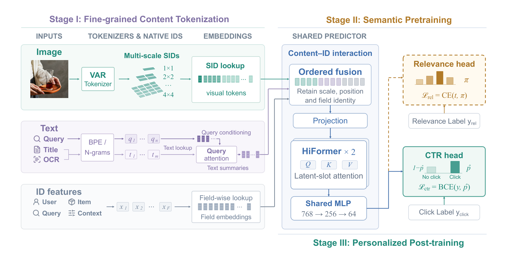
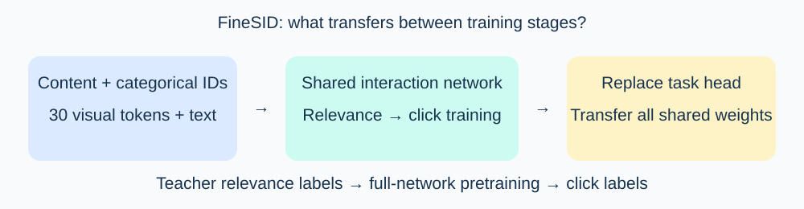

FineSID improves multimodal CTR prediction through three stages: offline content tokenization, full-network relevance pretraining, and personalized click post-training. Heavy visual encoding happens offline. Serving uses discrete lookups and a shared interaction network. A seven-day Taobao A/B test reports a 0.85% relative GMV gain.
1. Problem and motivation
An ID-based ranker learns historical user–item associations, but sparse items need content signals. A single pooled image vector can hide details that distinguish two creatives for the same product. FineSID exposes separately accessible visual and text units to the ranker.
Semantic IDs are discrete integers representing content. Here they are ranking features; the model does not generate a recommendation list autoregressively. The title’s progression is literal: describe content, learn query relevance, then adapt to personal click preferences.

2. Method
The frozen VAR visual tokenizer supplies four spatial grids: 1×1, 2×2, 3×3, and 4×4. Together they produce 30 visual tokens. Each token receives a trainable downstream embedding. Fixed concatenation preserves scale and spatial position. Zero is a valid code; missing codes use a separate validity mask.
Text uses subword and n-gram tokenizers, with separate field identities. Query-conditioned cross-attention summarizes each text field. These representations, spatial visual embeddings, and conventional categorical fields are concatenated and projected to a 768-dimensional global state. A HiFormer-inspired latent-slot interaction backbone limits the attention cost. HiFormer is the efficient feature-interaction baseline used in the paper.
A Qwen3.5 teacher trained with expert relevance annotations supplies soft labels over four query–item relevance levels. Pretraining optimizes:
Here k indexes relevance classes, t is the teacher distribution, and p is the predictor distribution. Every shared trainable component receives relevance gradients, including content lookups, categorical embeddings, interaction layers, and normalization parameters.
For click training, FineSID transfers those parameters and normalization states, replaces the relevance head, and fine-tunes the entire model with binary cross-entropy:
y is the observed click and the hatted p is its predicted probability. The same content interface is retained throughout.

Consider an illustrative request for a “blue commuter bag.” Two creatives share a product ID but have different images. Serving reads their precomputed tokens. Relevance training supplies the query–content relationship; click training adapts that relationship to the user’s interests. Differences between the two creative scores probe content use while holding product identity fixed.
3. Main contribution
Fine-grained content access and full-network transfer reinforce each other. The representation retains local details, while relevance gradients teach the actual interaction network to use them. The click task then adapts those same interactions.
Within-product evaluation is especially informative. NSCTR, normalized simulated CTR, uses logged creative matches to estimate weighted click performance after selecting among creatives of the same item. It complements ordinary product-level ranking metrics.
4. Results
The industrial evaluation uses chronological Taobao search splits. Cold-start items have fewer than 1,000 page views on the evaluation day. AUC measures click discrimination; query-grouped AUC aggregates within-query performance with impression weights.
| Evaluation | Change against HiFormer with ID features |
|---|---|
| Overall AUC | +0.25 percentage points |
| Cold-start AUC | +0.38 percentage points |
| Within-product NSCTR | +0.75% relative |
| Overall AUC without relevance pretraining | +0.20 percentage points |
| Cold-start AUC without fine-grained IDs | −0.03 percentage points |
| Seven-day online GMV | +0.85% relative |
MMCTR lacks the relevance labels needed for the middle stage. The content-tokenization plus click-training variant reaches 0.9844 AUC there. That result tests the content interface without testing the full three-stage recipe.
5. Limitations
The visual tokenizer remains frozen and was trained for reconstruction rather than search semantics. The authors identify joint semantic optimization as a future direction. Evidence centers on late-stage CTR prediction and creative selection. Early retrieval and conversion prediction have different cost and supervision requirements.
The paper reports no significant serving-latency increase in its late-stage deployment, without a complete latency distribution. Wider input projection remains a real engineering cost.
6. Practical implications
A ranker with categorical feature support can test offline visual tokens while preserving scale and position. Transfer checkpoints should include normalization state, not only embeddings. Add cold-start and same-item creative slices to distinguish content generalization from historical ID memorization.